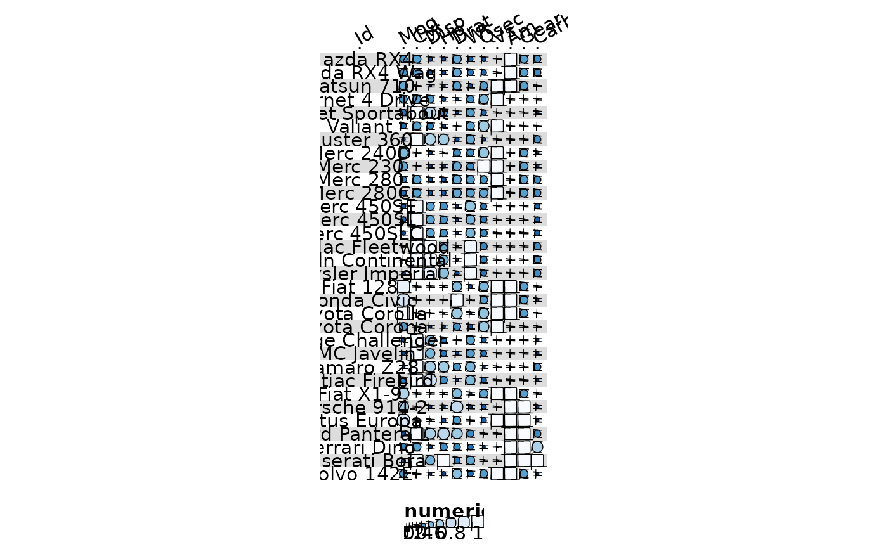

Allows generating heatmap-like visualisations for benchmark data frames. Funky heatmaps can be fine-tuned by providing annotations of the columns and rows, which allows assigning multiple palettes or geometries or grouping rows and columns together in categories.
Usage
funky_heatmap(
data,
column_info = NULL,
row_info = NULL,
column_groups = NULL,
row_groups = NULL,
palettes = NULL,
scale_column = TRUE,
add_abc = TRUE,
col_annot_offset = 3,
col_annot_angle = 30,
removed_entries = NULL,
expand = c(xmin = 0, xmax = 2, ymin = 0, ymax = 0)
)Arguments
- data
A data frame with items by row and features in the columns. Must contain one column named
"id".- column_info
A data frame describing which columns in
datato plot. This data frame should contain the following columns:id(character): The corresponding column name indata.name(character): A label for the column. IfNAor"", no label will be plotted. If this column is missing,idwill be used to generate thenamecolumn.geom(character): The geom of the column. Must be one of:"funkyrect","circle","rect","bar","pie", or"text". For"text", the corresponding column indatamust be acharacter. For"pie", the column must be a list of named numeric vectors. For all other geoms, the column must be anumeric.group(character): The grouping id of each column, must match withcolumn_groups$group. If this column is missing or all values areNA, columns are assumed not to be grouped.palette(character): Which palette to colour the geom by. Each value should have a matching value inpalettes$palette.width: Custom width for this column (default: 1).overlay: Whether to overlay this column over the previous column. If so, the width of that column will be inherited.legend: Whether or not to add a legend for this column.hjust: Horizontal alignment of the bar, must be between [0,1] (only forgeom = "bar").hjust: Horizontal alignment of the label, must be between [0,1] (only forgeom = "text").vjust: Vertical alignment of the label, must be between [0,1] (only forgeom = "text").size: Size of the label, must be between [0,1] (only forgeom = "text").label: Which column to use as a label (only forgeom = "text").options(listorjson): Any of the options above. Any values in this column will be spread across the other columns. This is useful for not having to provide a data frame with 1000s of columns. This column can be a json string.
- row_info
A data frame describing the rows of
data. This data should contain two columns:id(character): Corresponds to the columndata$id.group(character): The group of the row. If all areNA, the rows will not be split up into groups.
- column_groups
A data frame describing of how to group the columns in
column_info. Can consist of the following columns:group(character): The corresponding group incolumn_info$group.palette(character, optional): The palette used to colour the column group backgrounds.level1(character): The label at the highest level.level2(character, optional): The label at the middle level.level3(character, optional): The label at the lowest level (not recommended).
- row_groups
A data frame describing of how to group the rows in
row_info. Can consist of the following columns:group(character): The corresponding group inrow_info$group.level1(character): The label at the highest level.level2(character, optional): The label at the middle level.level3(character, optional): The label at the lowest level (not recommended).
- palettes
A named list of palettes. Each entry in
column_info$paletteshould have an entry in this object. If an entry is missing, the type of the column will be inferred (categorical or numerical) and one of the default palettes will be applied. Alternatively, the name of one of the standard palette names can be used:numerical:"Greys","Blues","Reds","YlOrBr","Greens"categorical:"Set3","Set1","Set2","Dark2"
- scale_column
Whether or not to apply min-max scaling to each numerical column.
- add_abc
Whether or not to add subfigure labels to the different columns groups.
- col_annot_offset
How much the column annotation will be offset by.
- col_annot_angle
The angle of the column annotation labels.
- removed_entries
Which methods to not show in the rows. Missing methods are replaced by a "Not shown" label.
- expand
A list of directions to expand the plot in.
Examples
library(tibble, warn.conflicts = FALSE)
data("mtcars")
data <- rownames_to_column(mtcars, "id")
funky_heatmap(data)
#> ℹ No column info was provided, assuming all columns in `data` are to be plotted.
#> ℹ Column info did not contain column `name`, using `id` to generate it.
#> ℹ Column info did not contain information on which columns to plot, inferring from `data` types.
#> ℹ Column info did not contain group information, assuming columns are ungrouped.
#> ℹ Column info did not contain a column called 'palette', generating palettes based on the 'geom' column.
#> ℹ Column info did not contain a column called 'width', generating options based on the 'geom' column.
#> ℹ Column info did not contain a column called 'legend', generating options based on the 'geom' column.
#> ℹ No row info was provided, assuming all rows in `data` are to be plotted.
#> ℹ Row info did not contain group information, assuming rows are ungrouped.
#> ℹ No palettes were provided, trying to automatically assign palettes.
#> ℹ Palette named 'numerical_palette' was not defined. Assuming palette is numerical. Automatically selected palette 'Blues'.
